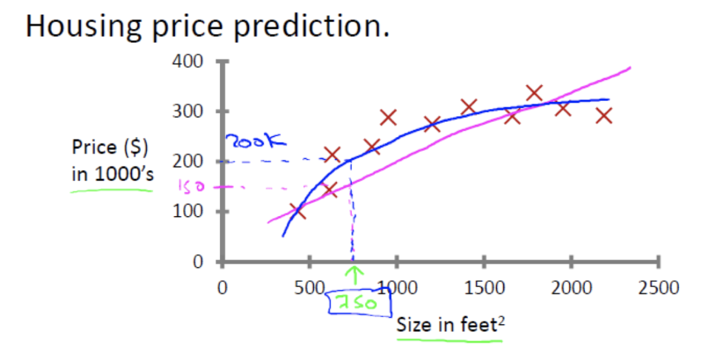
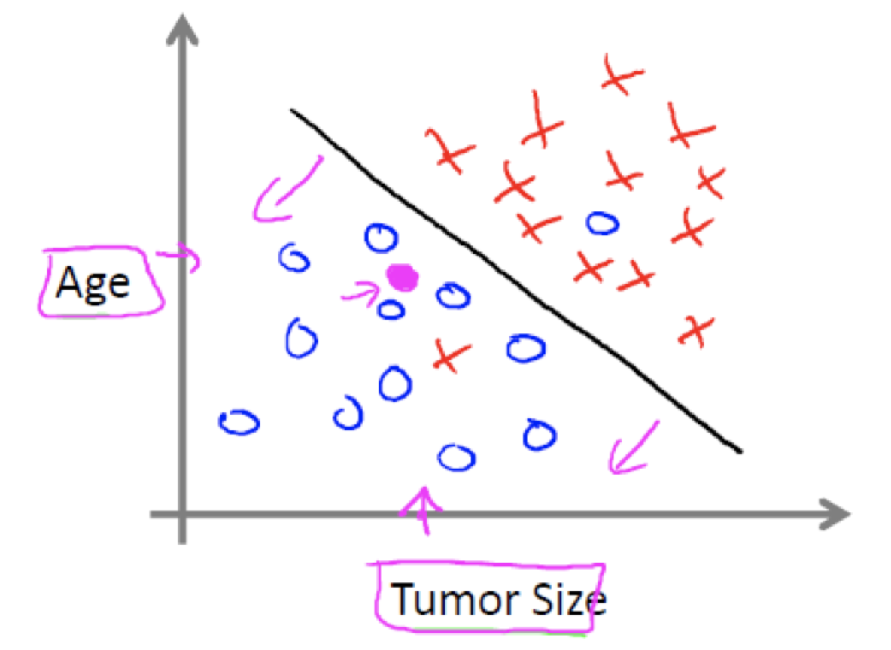

机器学习算法分类
根据数据集组成不同，可以把机器学习算法分为：
- 监督学习
- 无监督学习
- 半监督学习
- 强化学习
1 监督学习
定义：
- 输入数据是由输入特征值和目标值所组成。
- 函数的输出可以是一个连续的值(称为回归），
- 或是输出是有限个离散值（称作分类）。
- 输入数据是由输入特征值和目标值所组成。
1.1 回归问题
例如：预测房价，根据样本集拟合出一条连续曲线。

1.2 分类问题
例如：根据肿瘤特征判断良性还是恶性，得到的是结果是“良性”或者“恶性”，是离散的。

2 无监督学习
定义：
- 输入数据是由输入特征值组成。
输入数据没有被标记，也没有确定的结果。样本数据类别未知，需要根据样本间的相似性对样本集进行分类（聚类，clustering）试图使类内差距最小化，类间差距最大化。
举例：

有监督，无监督算法对比：

3 半监督学习
半监督学习：即训练集同时包含有标记样本数据和未标记样本数据。
举例：
监督学习训练方式：

半监督学习训练方式

4 强化学习
强化学习：实质是，make decisions 问题，即自动进行决策，并且可以做连续决策。
举例：
小孩想要走路，但在这之前，他需要先站起来，站起来之后还要保持平衡，接下来还要先迈出一条腿，是左腿还是右腿，迈出一步后还要迈出下一步。
小孩就是 agent，他试图通过采取行动（即行走）来操纵环境（行走的表面），并且从一个状态转变到另一个状态（即他走的每一步），当他完成任务的子任务（即走了几步）时，孩子得到奖励（给巧克力吃），并且当他不能走路时，就不会给巧克力。
主要包含四个元素：agent，环境状态，行动，奖励；

强化学习的目标就是获得最多的累计奖励。
监督学习和强化学习的对比
| 监督学习 | 强化学习 | |
|---|---|---|
| 反馈映射 | 输入到输出的一个映射，监督式学习输出的是之间的关系，可以告诉算法什么样的输入对应着什么样的输出。 | 输入到输出的一个映射，强化学习输出的是给机器的反馈 reward function，即用来判断这个行为是好是坏。 |
| 反馈时间 | 做了比较坏的选择会立刻反馈给算法。 | 结果反馈有延时，有时候可能需要走了很多步以后才知道以前的某一步的选择是好还是坏。 |
| 输入特征 | 输入是独立同分布的。 | 面对的输入总是在变化，每当算法做出一个行为，它影响下一次决策的输入。 |
| 行为模式 | 不考虑行为间的平衡，只是开发（exploitation）。 | 一个 agent 可以在探索和开发（exploration and exploitation）之间做权衡，并且选择一个最大的回报。 |

拓展阅读：Alphago进化史 漫画告诉你Zero为什么这么牛http://sports.sina.com.cn/chess/weiqi/2017-10-21/doc-ifymyyxw4023875.shtml
5 机器学习算法分类
监督学习(supervised learning)（预测）
定义：输入数据是由输入特征值和目标值所组成。函数的输出可以是一个连续的值(称为回归），或是输出是有限个离散值（称作分类）。
In：有标签，Out：有反馈
目的：预测结果
案例：猫狗分类，房价预测
分类 k-近邻算法、贝叶斯分类、决策树与随机森林、逻辑回归、神经网络
回归 线性回归、岭回归
无监督学习(unsupervised learning)
定义：输入数据是由输入特征值所组成。
In：无标签，Out：无反馈
目的：发现潜在结构
案例：“物以类聚，人以群分”
聚类 k-means，降维
半监督学习
已知：训练样本Data和待分类的类别
未知：训练样本有无标签均可
应用（案例）：训练数据量过多时，
监督学习效果不能满足需求，因此用来增强效果。
强化学习
In：决策流程及激励系统，Out：一系列行动
目的：长期利益最大化，回报函数（只会提示你是否在朝着目标方向前进的延迟反映）
案例：学下棋
算法：马尔科夫决策，动态规划